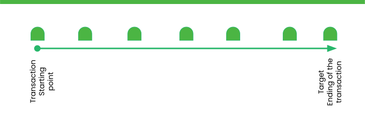
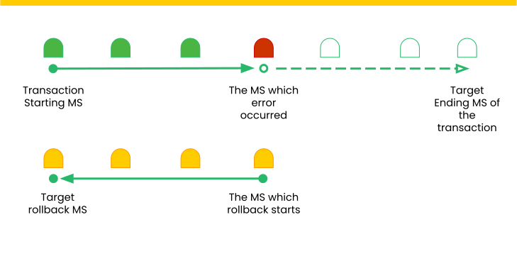

Introduction to the Saga Design Pattern
Overview
In modern distributed systems, handling long-running transactions across multiple microservices is a significant challenge. The Saga pattern offers a robust solution for managing distributed transactions by breaking them into a series of smaller, isolated transactions that can be individually committed and compensated.
What is the Saga Pattern?
The Saga pattern is a microservices architectural pattern that ensures data consistency across multiple services without relying on distributed transactions. A saga is a sequence of local transactions where each transaction updates data within a single service. If a transaction fails, a series of compensating transactions are executed to undo the changes made by the previous transactions, thereby maintaining consistency. In the Saga pattern, a compensating transaction must be important and retryable. These two principles ensure that a transaction can be managed without any manual intervention. The Saga Execution Coordinator (SEC) ensures guarantees those principles.

The above diagram shows how to visualize the Saga pattern for the previously discussed online order processing scenario.
Types of Saga
There are two primary types of saga implementations:
-
Choreography-based Saga
-
In this approach, each service involved in the saga performs its local transaction and publishes an event. Other services listen to these events and react accordingly, performing their transactions and emitting subsequent events. This continues until all transactions in the saga are complete.
-
Pros: No central coordination needed, leading to simpler scalability.
-
Cons: Increased complexity in managing the flow of events and handling failures.
-
-
Orchestration-based Saga
-
This approach introduces a central coordinator or orchestrator that manages the entire saga. The orchestrator sends commands to each service to perform its transaction and waits for their responses. If a transaction fails, the orchestrator triggers compensating transactions to revert the changes.
-
Pros: Centralized control simplifies management and error handling.
-
Cons: The orchestrator can become a single point of failure and may require sophisticated state management.
-
Saga Orchestration Pattern
Saga Orchestration involves a central orchestrator that controls the flow of a saga, dictating the order of operations and handling any necessary Compensatings in case of failure. The orchestrator takes on the responsibility of managing the entire transaction process, making decisions about which steps to execute next and how to handle errors.
Key Characteristics:
-
Centralized Control: The orchestrator centrally manages the saga, ensuring that each step is executed in the correct order and coordinating Compensatings if a step fails.
-
Simplified Microservices: Microservices do not need to be aware of the overall transaction flow. They simply perform their individual tasks and report back to the orchestrator.
-
Error Handling: The orchestrator manages error handling and Compensatings, simplifying the logic in individual services.
-
Execution Flow: The orchestrator sends commands to services to perform actions, waits for their responses, and then decides the next step based on those responses.
Eventual Consistency
Definition: Eventual consistency guarantees that, if no new updates are made to a given piece of data, eventually all accesses to that data will return the last updated value. Over time, the system will converge to a consistent state, but it does not provide immediate consistency after an update.
Characteristics:
-
Latency: Eventual consistency allows for lower latency as updates can propagate in the background.
-
Availability: High availability is often achieved since the system can operate even if some nodes are temporarily unreachable.
-
Partition Tolerance: It can handle network partitions more gracefully, ensuring the system remains operational despite disruptions.
-
Use Cases: Suitable for systems where immediate consistency is not critical, such as DNS, web caches, and some NoSQL databases (e.g., Cassandra, DynamoDB).
Example: A social media platform where user profiles may not immediately reflect the latest changes across all servers. Eventually, all servers will have the same profile data, but there might be a delay.
| Eventual consistency is often used in the saga design pattern, particularly in the context of distributed systems and microservices architectures. |
Eventual Consistency in Sagas
Nature of Sagas:
-
Distributed Transactions: Sagas break down a large transaction into a series of smaller, independent transactions that can be managed separately across different services.
-
Compensating Actions: If a transaction in the saga fails, compensating actions are triggered to revert the previous transactions.
Eventual Consistency:
-
Asynchronous Execution: Because transactions in a saga are executed asynchronously and independently, immediate consistency is not guaranteed. Instead, the system achieves eventual consistency as each step in the saga completes and as compensating actions resolve any issues from failed steps.
-
Consistency Model: Eventual consistency is a natural fit for sagas, as it allows for high availability and partition tolerance. The system remains operational and available even as it progresses towards a consistent state.
-
Recovery and Retries: Sagas often include mechanisms for retrying failed transactions and handling transient errors, further supporting the eventual consistency model.
Classification of SAGA transactions
According to the behaviors of the transaction, we can mainly identify 3 transaction types that can be happened when we use saga.
-
Fully success transaction
-
Rollback/Compensating/Revert success transaction
-
Rollback/Compensating/Revert failed transaction
Fully Success Transaction

As we discussed earlier, we had used a number of microservices for executing one single execution. Here we have 4 atomic executions (atomic transactions) with 3 microservices. The entire transaction (Distributed transaction) will be completed after successfully executing the 4th atomic execution called MAKE_PAYMENT. All the atomic transactions are done successfully as we accepted it is called as fully-success-transaction.
Here is the summarized diagram for fully success transaction.
[ MS = Microservice ] 
Compensating Success Transaction

At this time, An exception has occurred when make payment execution is executed. Then the primary executions process is stopped due to the error, and the compensating process is started to undo the successfully executed executions so far. And finally, the compensating process is also completed. Even though this is a failed transaction from the business perspective, this is one of the successful transaction types from the Saga perspective. Because we have managed to successfully restore the data eventually.
Here is the summarized diagram for compensating successful transaction.
[ MS = Microservice ] 
Compensating Failed Transaction

At this time, a primary execution exception is occurred when make-payment execution. Then the compensating processing is stared one by one as the sequence order to undo the changes that have been made by the primary executions. While then, unfortunately, an error occurred in the process of RELEASE_PRE-AUTH.
| Even we discuss this kind of situation As a theory, you should be able to manage not to happen this kind of situation as a developer. In brief, the compensating transactions cannot be failed (if there is a Resource Unavailability problem, the compensating transactions can be retried until the execution is successful. Except that the compensating transactions cannot be failed. |
| Don’t worry about handling those complex situations. Stacksaga provides the way that you can manage them easily. |
Here is the summarized diagram for compensating failed transaction.
[ MS = Microservice ]
Challenges and Considerations Of using Saga
-
Complexity: Implementing and managing sagas requires careful planning and design, especially for failure recovery.
-
Idempotency: Ensuring that compensating transactions are idempotent (safe to run multiple times) is crucial to avoid inconsistent states.
-
State Management: Keeping track of the state of the saga and handling retries can add complexity, particularly in orchestration-based sagas.
StackSaga framework provides an easy way to overcome these Challenges along with more additional features.